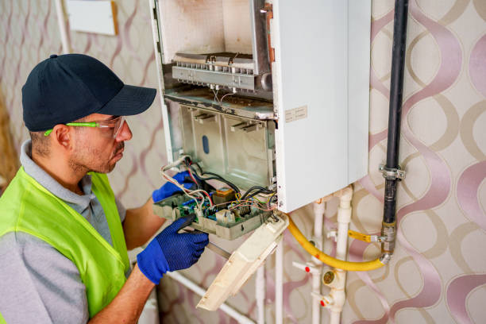
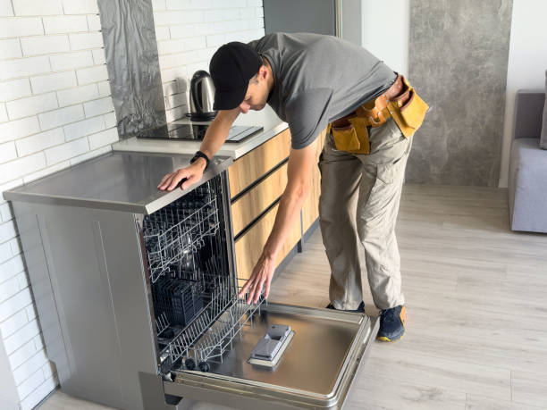
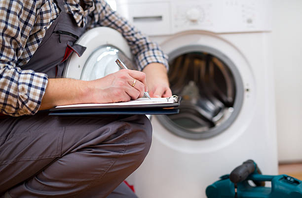

USA - Nationwide
info@usaappliancerepair.pro
USA - Nationwide
info@usaappliancerepair.pro

Get back to cooking delicious meals with our professional oven and stove repair services . Fast service you can trust!
Bring the heat back to your kitchen! Our oven and stove repair in Usa - Nationwide ensures delicious meals with fast, dependable repairs that save you time and money.
Residential & commercial Appliance Repair
Quality services at affordable prices
Immediate 24/ 7 emergency services


Is your refrigerator on the fritz? Don't let spoiled food and rising grocery bills affect your household. Our expert technicians specialize in Refrigerator Repair Services ensuring your appliance runs efficiently and reliably. We understand that a malfunctioning fridge can be a major inconvenience, which is why we offer same-day service and flexible scheduling to fit your busy life. Our team is trained on all types of refrigerator models, from side-by-side and top freezer units to French door fridges. We utilize state-of-the-art diagnostic tools to identify and quickly resolve any issues, whether it’s a compressor problem, thermostat malfunction, or clogged defrost drain. Choosing us means opting for quality, transparency, and peace of mind. Plus, all repairs are backed by a warranty, so you know you're getting the best service possible .

A broken washing machine can derail your laundry schedule and create unnecessary stress. That’s why at Appliance Repair, we offer prompt and reliable washing machine repair services tailored to your needs. Our skilled technicians are trained to handle various brands and models, ensuring that no matter the problem—be it leaks, spin issues, or electrical failures—your appliance is in expert hands. We pride ourselves on our transparent pricing, expert diagnostic approach, and a commitment to getting your laundry back on track as quickly as possible. For trustworthy service choose us for your washing machine repair needs.

When your dryer stops working, damp laundry can pile up quickly, turning into a considerable inconvenience. At Appliance Repair, we understand the urgency of dryer repairs. Our trained professionals specialize in diagnosing and fixing a wide range of dryer issues, from failures to heat up to mechanical malfunctions. We utilize advanced tools and techniques to ensure a thorough and lasting repair. With years of experience in the appliance repair industry, we offer fast services, affordable rates, and a satisfaction guarantee. For dryer repairs you can count on in Usa - Nationwide, choose us and experience the difference.

When your dishwasher stops working, it can lead to a mountain of dirty dishes and frustration. Our Dishwasher Repair Services are designed to alleviate your inconvenience by providing quick and effective repairs for all models. Our qualified technicians can tackle any issue from leaks and drain problems to electronic malfunctions. We understand that time is valuable, which is why we offer flexible scheduling and strive for same-day services. With our commitment to honesty and transparent pricing, you'll know exactly what to expect when you choose us. Count on our appliance repair specialists in Usa - Nationwide to restore your dishwasher’s efficiency and reliability.

A microwave that isn’t working correctly can be a major hassle, especially for a busy household. At Appliance Repair, we provide professional microwave repair services that address all kinds of problems, including heating irregularities, noisy operation, or complete failure. Our experienced technicians are trained to work on various microwave brands and models, ensuring that your appliance is in good hands. We take pride in our timely service and dedication to fixing your microwave quickly and affordably. For expert microwave repairs choose us and experience hassle-free service.

A malfunctioning garbage disposal can lead to inconvenient and messy situations in your kitchen. Our Garbage Disposal Repair service focuses on identifying the cause of the malfunction, be it a jam, electrical issue, or corrosion. Our qualified technicians assess the problem carefully and offer effective solutions to restore functionality swiftly. As part of our commitment to excellent service, we guide you on proper usage to avoid future issues. We are dedicated to making your kitchen a pleasant environment, which is why we are the preferred choice for garbage disposal repairs . Trust us to deliver quick, reliable, and high-quality repairs.

Your freezer plays a critical role in food preservation and storage. If it stops working, it can lead to wasted food and frustration. Our Freezer Repair Services ensure your appliance remains in peak condition. With years of experience, our technicians can address problems ranging from frost buildup to temperature fluctuations and compressor failures. We understand that every minute counts, which is why we prioritize rapid response and professional service. By choosing us, you're selecting a dependable partner in restoring your freezer’s efficiency—keeping your food fresh and your worries at bay.

Enjoying cold beverages is a breeze with a functional ice maker, but what happens when it stops producing ice? Our specialized Ice Maker Repair services are designed to get your machine back on track in no time. We address a variety of issues including clogged filters, faulty water lines, and mechanical failures. Our skilled technicians bring extensive knowledge to every job, using high-quality components for replacements to ensure longevity. With our commitment to customer satisfaction and affordability, we strive to deliver the best possible service .

Your range hood is vital for maintaining air quality in your kitchen, yet it often gets overlooked until problems arise. Our Range Hood Repair Services focus on ensuring your ventilation system functions efficiently, preventing excess smoke, odors, and humidity from accumulating in your cooking space. Our knowledgeable technicians are adept at fixing a variety of issues, including noisy fans, lighting problems, and duct challenges. With us, you can expect prompt service, expert advice, and assurances of high-quality workmanship. We’ll help you breathe easy with our reliable range hood repair .

In the fast-paced world of food service, a functional commercial refrigerator is imperative. Our Commercial Refrigerator Repair services in Usa - Nationwide specialize in providing timely and professional intervention when your refrigerator malfunctions. We understand that every minute a fridge is down can cost your business money. Our experienced technicians are trained to work with various commercial refrigeration units, ensuring minimal disruption to your operations. With a commitment to quality service and efficiency, we offer peace of mind for your business . Trust us to get your refrigeration system running again, so your business can thrive.

Running a restaurant requires reliable kitchen appliances that operate at peak efficiency. Our Restaurant Appliance Repair Services in Usa - Nationwide encompass everything from ovens and ranges to dishwashers and refrigerators. We understand the fast-paced environment of culinary business and the urgency of appliance repairs. Our team of certified technicians is well-trained in the specific demands of commercial kitchen appliances, offering targeted solutions that minimize disruptions. We believe in providing high-quality service at competitive prices, ensuring your restaurant kitchen operates smoothly and safely .

For businesses relying on industrial dishwashers, downtime is not an option. Our Industrial Dishwasher Repair Services in Usa - Nationwide focus on delivering fast and effective solutions for your high-capacity needs. Whether you operate a large-scale restaurant, cafeteria, or institution, our skilled technicians are equipped to handle all brands and types of industrial dishwashers. We offer same-day service and a commitment to quality repairs that keep your operations running efficiently. Customer satisfaction and operational integrity are our key priorities, and you can depend on our expertise for swift and reliable repairs.

Efficient cooking equipment is crucial in commercial kitchens. Our Commercial Oven and Range Repair services ensure that your kitchen never skips a beat. Our certified technicians work meticulously to diagnose problems, whether they involve temperature deviations, electronic malfunctions, or structural issues. We commit to quality and reliability, ensuring that your cooking appliances are restored to peak performance quickly, minimizing downtime. Let us help you maintain your kitchen's efficiency and productivity by choosing us for your commercial oven repairs .

The integrity of your walk-in freezer is vital for managing inventory in commercial food services. At Appliance Repair, we specialize in walk-in freezer repair services to address any critical issues, from compressor failures to insulation problems. Our skilled technicians maintain a strong understanding of commercial refrigeration, ensuring effectively tailored repair solutions. Our dedication to quick turnaround times and quality repairs means your operations remain uninterrupted. Choosing us ensures you receive elite service .

If your commercial laundry equipment is not functioning at its best, it can cause significant setbacks in your operations. Our Laundry Equipment Repair for Businesses provides tailored solutions to suit diverse commercial laundry setups. Our specialists are trained to repair various types of washers, dryers, and folding machines used in laundromats, hotels, and hospitals. We offer fast service to minimize downtime while ensuring repairs are conducted to the highest standards. By choosing us, you're investing in dependable and efficient repair services that enhance your business’s productivity .

In an increasingly interconnected world, the integration of HVAC and appliance systems has become essential for efficiency and comfort. Our HVAC and Appliance Integration Repairs address various issues related to the seamless operation of combined systems. Our knowledgeable technicians are well-versed in both HVAC and appliance mechanics, providing expert solutions for optimal functionality. With our focus on service quality and customer satisfaction, we are the top choice for integrated repairs ensuring your home or business operates smoothly.

If you're running a bakery, your equipment's reliability is critical to your success. Our Bakery Equipment Repair services in Usa - Nationwide are tailored to meet the demands of commercial baking businesses, from ovens to mixers. Our skilled technicians have extensive experience in diagnosing and resolving common bakery equipment issues, ensuring that your operations remain uninterrupted. We understand the importance of quality and precision baking, and our timely service ensures your equipment is back to optimal performance. Employ our expertise in bakery equipment repair to keep your products delicious and your customers satisfied .

The mobile food industry relies heavily on functioning appliances. Our Food Truck Appliance Repair services are designed to get your mobile kitchen back in action swiftly. We service a wide range of equipment, including refrigerators, fryers, and grills, understanding that downtime can cost you sales. Our skilled technicians know the unique challenges that food trucks face and are equipped to provide effective solutions quickly. With us, you get fast, reliable service, enabling you to continue delighting customers with your delicious offerings .

For retail businesses, a refrigerated display case is vital for product presentation and preservation. If your display cases are not functioning correctly, it can compromise your products’ quality. Our Refrigerated Display Case Repair services are designed to identify and solve issues swiftly, ensuring your products remain in top condition. Our trained technicians are experienced in handling various makes and models, focusing on restoring your display cases to full functionality. Count on us for reliable, quality repairs to enhance your business’s visual appeal and operational efficiency .

When it comes to luxury kitchen appliances, experiencing a malfunction can be frustrating. Our High-End Appliance Repair services are specialized to meet the unique needs of premium brands. Our technicians are particularly skilled in handling complex systems and advanced technologies that define luxury appliances. We offer meticulous repairs with an emphasis on protecting your investment, maintaining both function and aesthetics. Choose us for your high-end appliance repair needs and experience the precision and excellence that your luxury brand deserves.

In today’s digital age, smart appliances are becoming common, providing convenience and efficiency. Our Smart Appliance Repair Services are designed to troubleshoot issues that arise in connected devices. From smart refrigerators to Wi-Fi enabled washers, our skilled technicians are proficient in diagnosing and repairing the latest technologies. We pride ourselves on our ability to stay updated with the evolving appliance landscape, ensuring quality service every time. Trust us to handle your smart appliance repairs in Usa - Nationwide, and benefit from our extensive knowledge and dedication.

Portable appliances offer flexibility and convenience, but they can also require timely maintenance and repairs. Our Portable Appliance Repair Services cater to a wide variety of small appliances, including blenders, toasters, microwaves, and more. Our skilled technicians are adept at diagnosing and fixing issues quickly, allowing you to return to your daily routine without interruption. With our commitment to high-quality service, competitive pricing, and prompt repairs, you can depend on us to keep your portable appliances running smoothly.

Energy-efficient appliances save money and environmental resources, but they occasionally encounter issues. At Appliance Repair, we specialize in energy-efficient appliance repairs, restoring your appliances to optimal energy-saving performance. Our experienced technicians understand the intricacies of eco-friendly technologies and provide diagnostic services that consider energy efficiency, ensuring sustainable solutions. By choosing us, you are guaranteed expert repairs that prioritize both performance and the environment .

Appliance emergencies demand immediate attention to avoid further complications. At Appliance Repair, we offer emergency appliance repair services, available around the clock to tackle your urgent needs. Our skilled technicians are always ready to respond to issues that cannot wait, delivering prompt and effective repairs for all types of appliances. We believe in a customer-centric approach, ensuring you receive support precisely when you need it. For emergency repairs trust us to resolve your crisis efficiently.

Regular maintenance is the key to prolonging the life of your appliances. At Appliance Repair, we offer customized appliance maintenance plans designed to fit your individual needs. Our plans include routine inspections, timely servicing, and preventive repairs, ensuring your appliances operate at peak performance. Our technicians are trained to identify potential issues before they escalate into costly repairs, securing your appliance investments for years to come. Choose us for affordable and comprehensive maintenance solutions tailored to your home or business in Usa - Nationwide.
Installing new appliances is as crucial as ensuring they work well. Our Appliance Installation and Setup with Repairs services provide comprehensive solutions for all your needs. From proper installation of kitchen appliances to setup of complex systems, we ensure everything is connected and functioning optimally. If issues arise during or after installation, our team is ready to address them swiftly. Trust us for expert installation paired with the knowledge to troubleshoot issues on the spot, giving you peace of mind and confidence in your new appliances .
Gas appliances require specialized knowledge for safe and effective repairs. Our Gas Appliance Repair Services provide essential solutions to ensure your gas equipment operates safely and efficiently. From stoves to water heaters, our trained technicians understand the intricacies of gas systems and are adept at troubleshooting and repairing any issues. We prioritize your safety and the efficiency of your appliances, offering reliable service with a focus on quality and customer satisfaction. Trust us as the go-to service provider for gas appliance repairs in Usa - Nationwide.
The control panel is the brain of your appliances; when it fails, it can disrupt their operation. Our Appliance Control Panel Repairs in Usa - Nationwide focus on restoring functionality to your kitchen and laundry devices. Our experienced technicians are adept at troubleshooting control panel issues, including faulty buttons, inconsistent displays, and wiring problems. We prioritize quality and accuracy in every repair, using only original parts to ensure reliability. Choose us for meticulous service, and restore your appliance’s performance with our specialized repair solutions .
Vintage and antique appliances hold charm and nostalgia, but they may need specialized care due to their unique construction. At Appliance Repair, we offer vintage and antique appliance repair services that respect the integrity of your treasured items. Our technicians possess in-depth knowledge of older appliance models, utilizing traditional and modern techniques to restore them without compromising their character. With our focus on craftsmanship and attention to detail, we provide exceptional service for preserving your vintage treasures . Choose us for your antique repair needs.
USA - Nationwide Appliance Repair Pros
(877) 848-1711
info@usaappliancerepair.pro
09.00 AM - 09.00 PM
09.00 AM - 12.00 PM